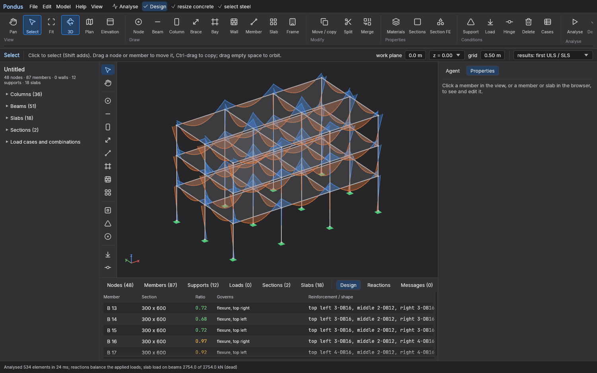
Bending moments and forces
Every member's moment, shear and axial force is drawn on the model, and the design table lists the bars chosen for every beam.
Ask an AI agent to build, analyse and design a building, then check every number yourself in the same model. 3D frames, slabs and shear walls, earthquake, pushover and moving loads, with concrete to ACI 318-19 and steel to AISC 360-16 or Eurocode 3.
Free software. The analysis runs on the verified Stabileo engine. Structural results from any software must be checked by a qualified engineer.
The agent and your own hand act on one model through the same commands, so everything the agent does can be inspected, edited and undone in the ordinary interface.
Type "a 3-storey concrete frame, 3 bays of 6 m by 2 bays of 5 m, 150 mm slabs, office live load, design the beams and slabs". The agent builds, analyses and designs while you watch.
Beams, columns, bays, slabs, walls, supports and loads are drawn with the mouse. Switch between the agent and your hand at any time, and Undo takes back either.
3D frames with slabs and shear walls, response spectrum (CQC or SRSS), P-Delta and buckling, pushover, moving loads, construction stages and time history. Bars and shapes chosen for you.
One click writes the full calculation report as a PDF. Models move in and out as Excel, DXF (AutoCAD) and IFC (Revit and BIM), and back to Aedifex.
Click any picture to enlarge it. All of them are screenshots of Pondus 0.1.

Every member's moment, shear and axial force is drawn on the model, and the design table lists the bars chosen for every beam.
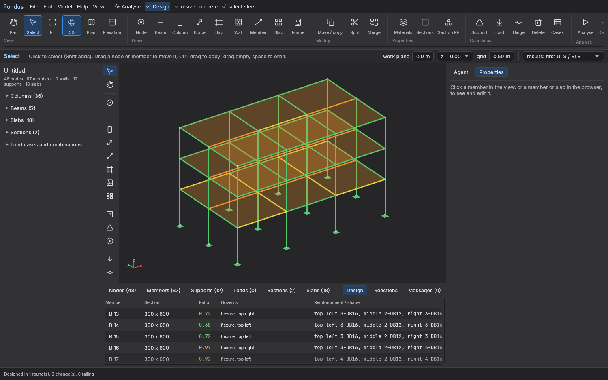
After design, every member and slab is coloured by how hard it works: green below 0.7, yellow below 0.9, orange below 1.0 and red when it fails.
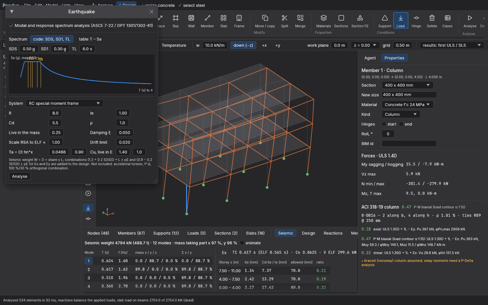
Response spectrum after ASCE 7-22 and the Thai DPT 1301/1302-61, with the modes, the base shear and the storey drift check. Click any member to see its forces and its full ACI design.
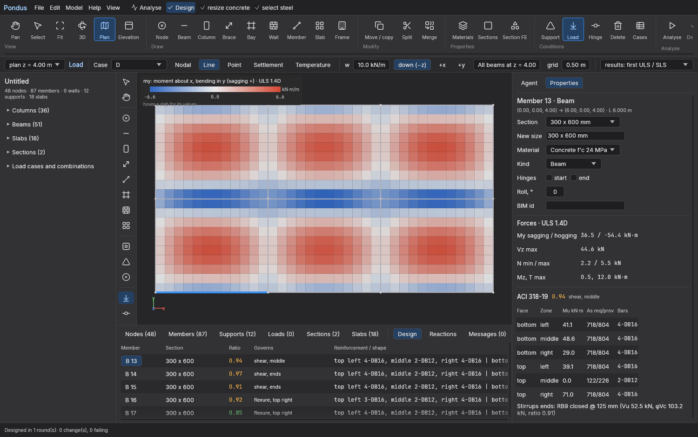
Slabs can be designed by the code coefficient tables or meshed as MITC4 plates with the frame, with the moments shown in colour and the bars computed from them. A plate can also rest on columns or piles alone: a flat plate, a pile cap or a mat on soil, with the punching check at every support.
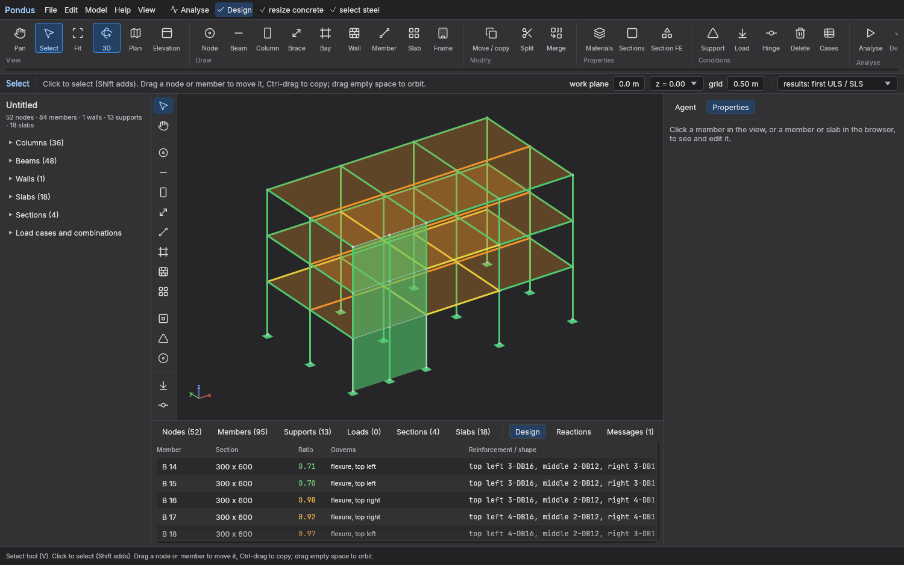
Draw a wall, and Pondus connects it to the floors, analyses it by the wide-column analogy and designs it storey by storey to ACI 318-19 Chapters 11 and 18.
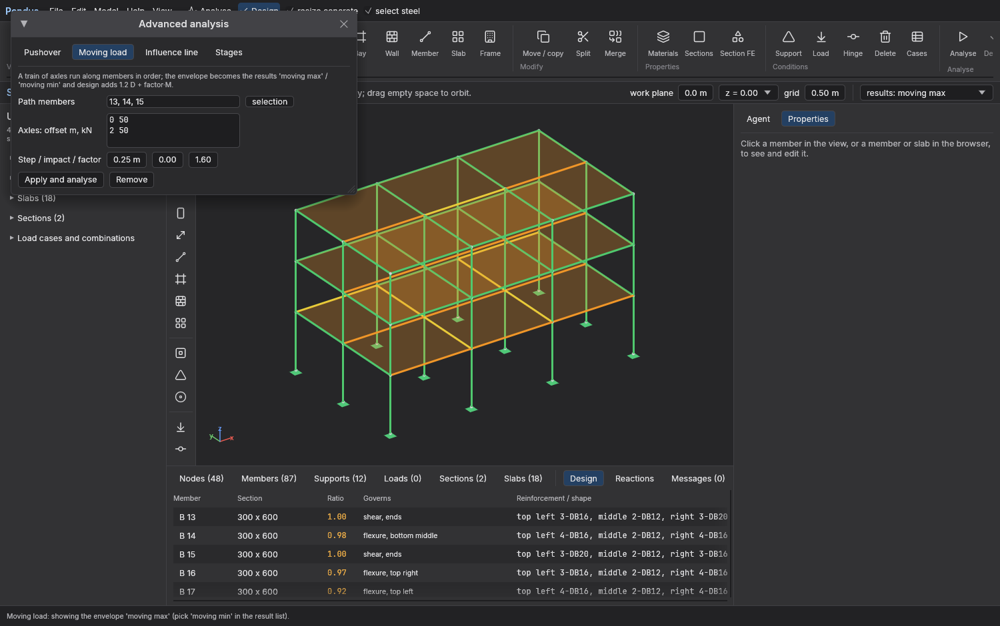
Run a truck or any train of axles along the beams. Pondus finds the worst position at every point and designs the members for it, within 0.16 % of the FHWA HL-93 envelopes.
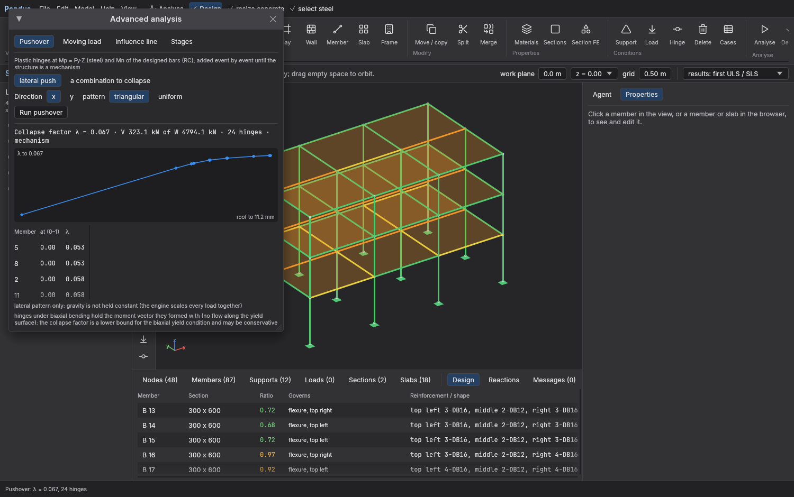
Push the building sideways until it forms a mechanism, and read the collapse load, the hinge sequence and the capacity curve.

Draw with the toolbar and the palette, edit in the tables, or ask the agent in the chat on the right. Both work on the same model.
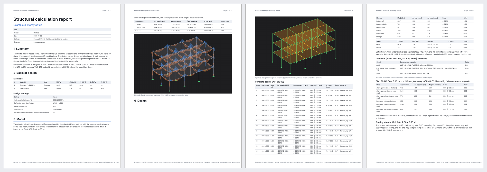
One click writes the PDF: basis of design, loads and their balance, diagrams, every design table and the full calculation of the governing members.
A beam under load, the ASCE 7-22 design spectrum with the base shear coefficient, and the mode shapes of a shear building. Everything runs in this page, nothing is sent anywhere.
Gross rectangular section, linear elastic. Pondus's own tests check a simply supported beam to wL²/8, wL/2 and 5wL⁴/384EI within 0.1 %.
Metric Ct values of ASCE 7-22 Table 12.8-2. The drift and detailing checks are in Pondus, not here.
A shear building: lumped masses, storey springs, K φ = ω² M φ solved by Jacobi rotations. Pondus solves the full 3D model by Lanczos and keeps adding modes until 90 % of the mass takes part.
| Mode | T (s) | f (Hz) | Mass taking part | Cumulative |
|---|
The model has 84 walls, 2,286 frame members and rigid diaphragms at 78 levels, up to the top of the concrete at 586 m, and was built through the MCP server by a script as an agent would build it. The static analysis and a 60-mode response spectrum take about a minute on a 16-core computer, and Windows and Linux machines with an NVIDIA GPU factorise the large stiffness matrices on the card with the same answers.
| Model | T1 (s) | T2 (s) |
|---|---|---|
| Fixed base, gross sections | 6.93 | 6.23 |
| Fixed base, 0.70 Ig (ACI 318-19 6.6.3.1.1) | 8.24 | 7.42 |
| Piled raft as springs | 7.04 | 6.35 |
| SOM's analysis (Baker, Korista and Novak 2007) | 11.3 | 10.2 |
The model is too stiff, 27 to 39 % below SOM's periods, because the corridor walls are solid here and coupled through link beams in the real tower, and because the core dimensions are assumed. It shows what Pondus can model, and it is not a validation.
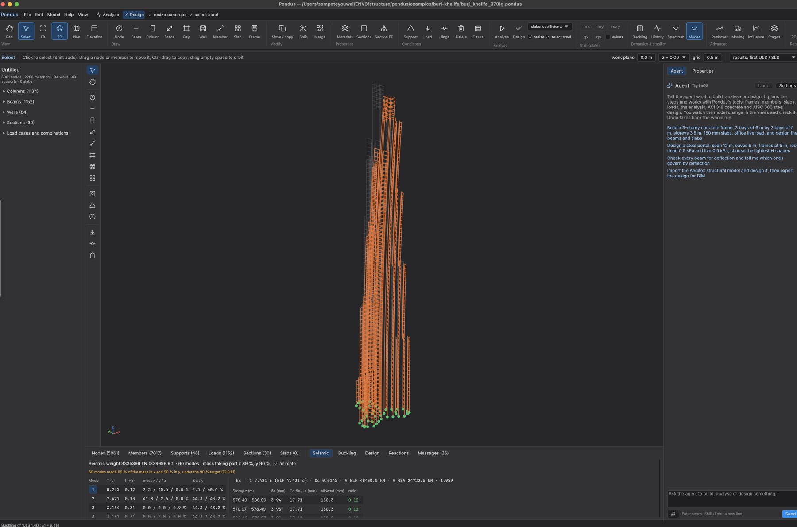
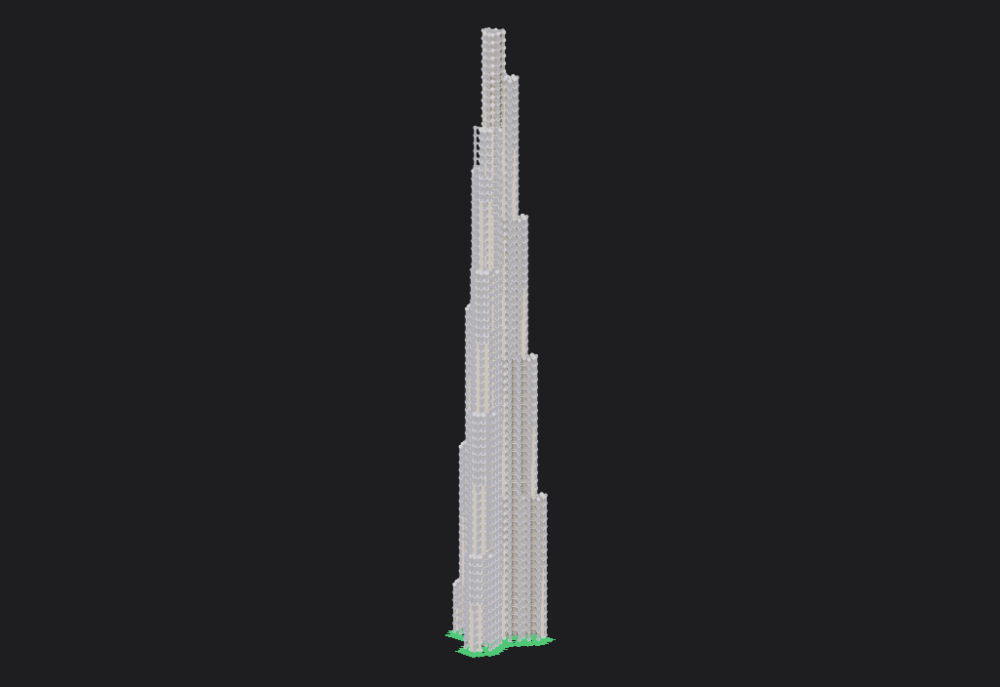
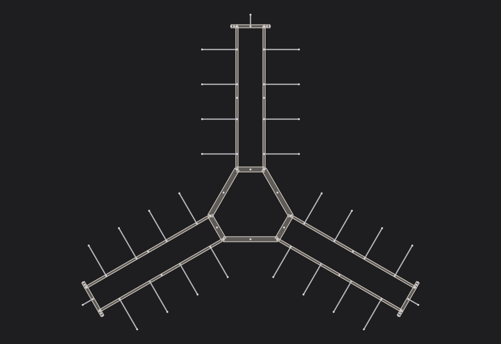
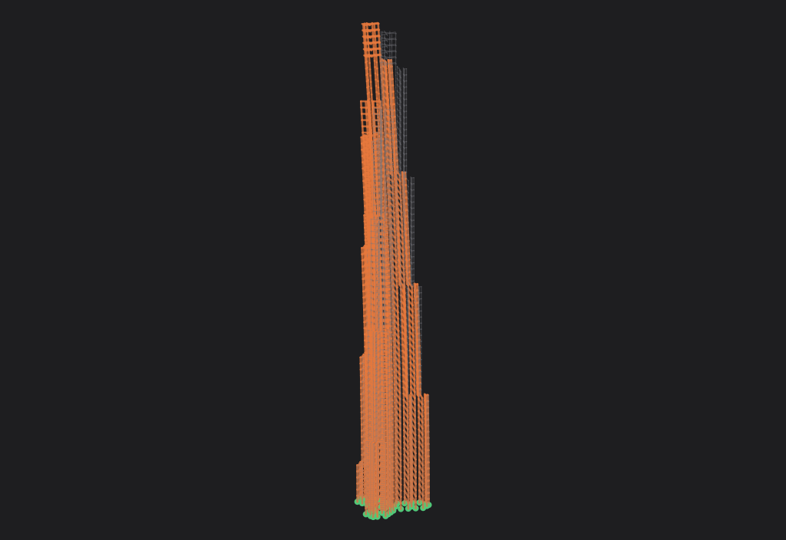
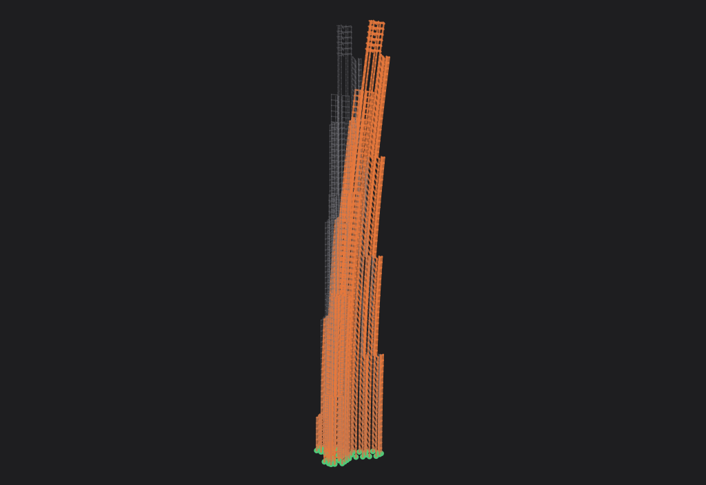
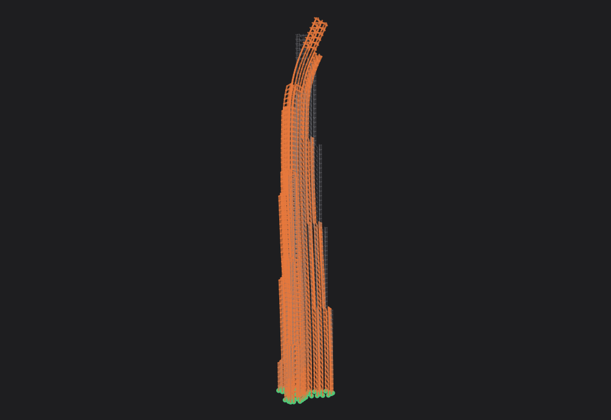
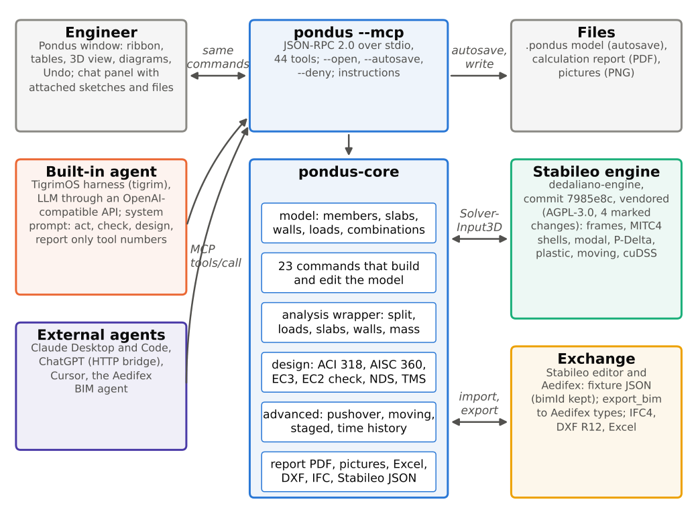
The built-in chat runs an agent session on a copy of the model for every message, and external agents such as Claude Desktop, Claude Code and ChatGPT reach the program through the same MCP server of 46 tools. Every tool calls the functions the ribbon uses, so a model built by the agent can be checked, edited and undone by hand.
The tools return the checks an engineer would make, such as the balance of applied loads and reactions and the share of slab load that reached the beams, so the agent is prompted to verify its own work.
In the paper, a two-storey concrete frame took 13 tool calls and 105 s, and a five-storey wall-frame building with an earthquake analysis and a calculation report took 22 tool calls and 382 s. The agent's answers were audited against the program and hand checks: every number was right, but four descriptions were wrong, which is why the model, the tables and the report stay open for the engineer.
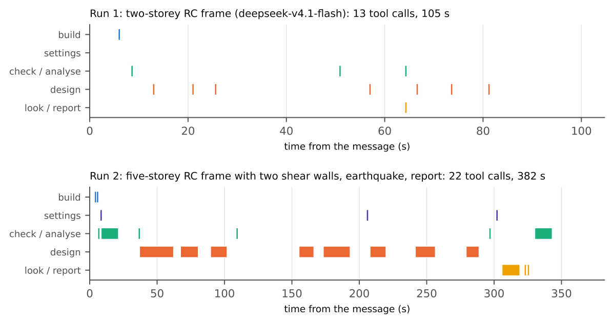
Every comparison goes through Pondus's own model, analysis wrapper and design code, and every reference, page and fix is listed in the calibration notes of the repository.
Textbooks, the ANSYS Verification Manual, the AISC Design Examples, SCI, JRC and StructurePoint examples, Clough and Penzien, Heidebrecht and Stafford Smith, and the FHWA bridge example. 430 agree within 0.5 % and 449 within 1 %. Fourteen defects were found and fixed, six of them unconservative.
Calibration report (PDF) →28 problems of CSI's verification manuals rebuilt in Pondus: statics, releases, temperature, settlements, P-Delta, buckling, staged construction, modal and response spectrum, shear walls and the ACI, AISC and Eurocode design examples. 177 agree within 0.5 %. Eight defects were found, among them a Eurocode 3 moment resistance not reduced for high shear.
Notes →The 7-storey wall building tested on the UCSD–NEES shake table: the measured first period within 6.2 % and the second-mode frequency within 0.9 % with gross sections, and the ACI 318 effective stiffnesses bracket the periods measured after the earthquake tests.
The paper on Zenodo →S. Youwai (2026). Pondus: an agentic structural analysis and design program. Zenodo. DOI 10.5281/zenodo.23581167.
@misc{youwai2026pondus,
author = {Youwai, Sompote},
title = {Pondus: an agentic structural analysis and design program},
year = {2026},
publisher = {Zenodo},
version = {v1},
doi = {10.5281/zenodo.23581167},
url = {https://doi.org/10.5281/zenodo.23581167}
}Unzip and run. Everything works without an AI provider; the agent needs one (for example OpenRouter), entered under Agent › Settings.
Universal build for Apple Silicon and Intel. Unzip, move Pondus.app to Applications, and the first time right-click it and choose Open.
Unzip and run pondus.exe. If Windows warns about an unknown app, choose More info › Run anyway. An NVIDIA GPU with CUDA 12 and cuDSS speeds up large models.
All versions and the source: github.com/Sompote/pondus/releases. Build from source with cargo build --release. Installation steps and the agent setup are in the manual.
Structural results from any software must be checked by a qualified engineer before they are used for design or construction.